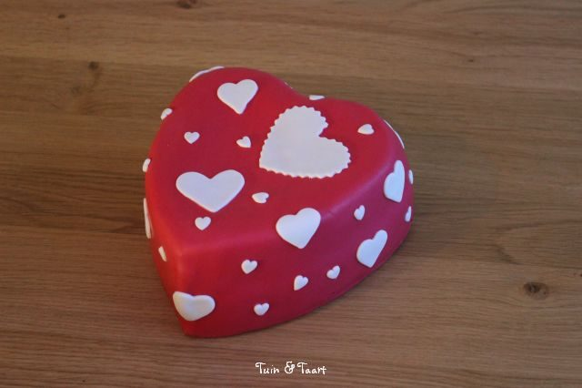

Taarten, cupcakes en workshops in Rijen
Taart precies zoals u hem wilt
Een taart op maat voor uw feest, of zelf aan de slag tijdens een workshop taart of cupcakes decoreren.

Wat u kunt verwachten
Drie manieren om te genieten
Taart op maat
U geeft thema, kleur en onderwerp aan en ik maak de taart. Ook cupcakes, cakepops en pushcakes in hetzelfde thema.
Workshops
Zelf een taart of cupcakes decoreren, alleen of met een groep tot 8 personen. Ook bij u thuis mogelijk.
Kinderfeestje
Ik kom naar u toe. De kinderen vullen en versieren zelf hun eigen boltaartje.
Taartfeest
Kinderfeestje bij u thuis
Voor kinderen van groep 3 tot en met 8. Het starttarief is € 90 voor 6 kinderen, ieder volgend kind kost € 10. Ik neem alle benodigdheden mee.
Ik kom naar
Rijen, Tilburg, Breda, Dongen, Oosterhout, Bavel, Gilze, Hulten, Molenschot, Teteringen, Terheijden en Ulvenhout. Andere plaatsen in overleg.